채널: EO Korea | 길이: 18:26 | 날짜: 2024-09-11
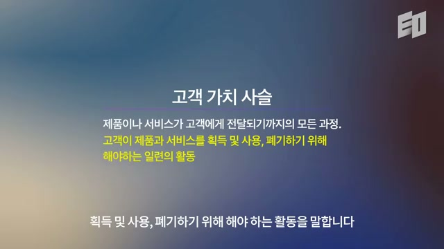
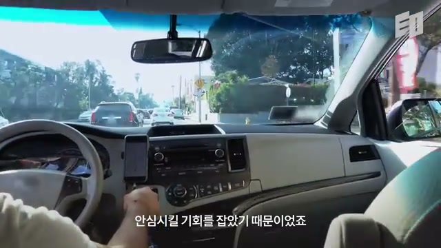
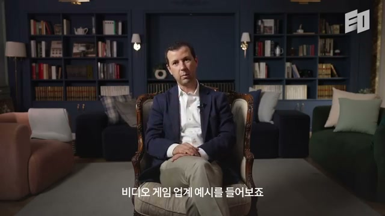
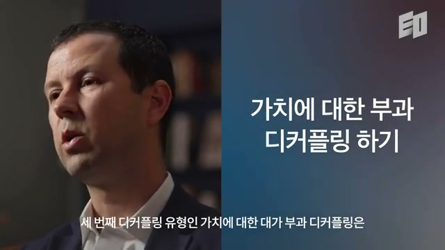
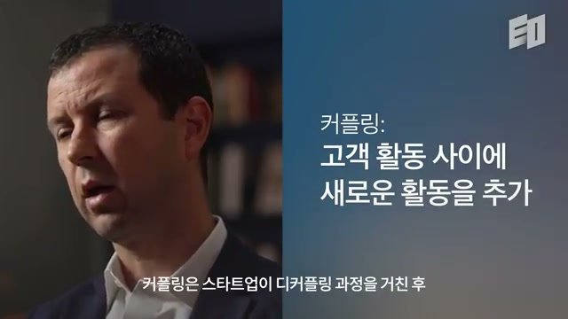
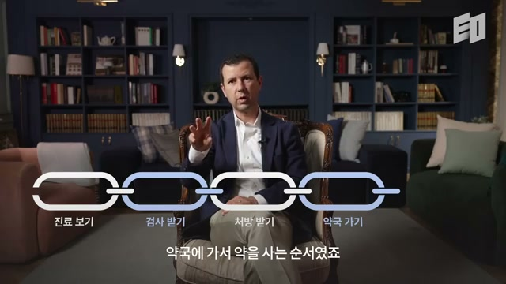
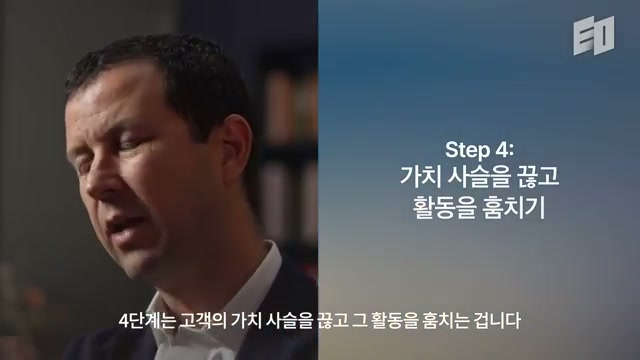
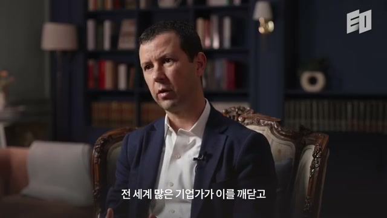
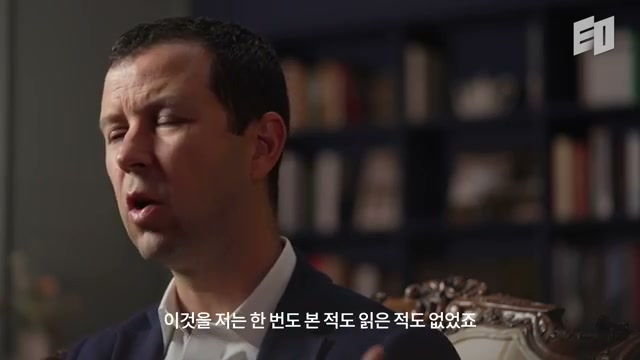
Thales Teixeira는 자신을 UC 교수이자 전 하버드비즈니스스쿨 교수로 소개한다. 그는 하버드에서 10년간 교수로 일했고, 그 기간 Facebook, Airbnb 같은 여러 스타트업에 강연하도록 초청받았다. 이 기업들은 서로 다른 산업에서 활동했지만, 디지털 혁신을 생각하고 실행하는 방식은 매우 유사했다. 그는 이 공통 방식을 보며 “디지털 파괴에 대한 접근법이 존재하지만, 자신도 알지 못했고 기존에 정리되어 있지 않았다”고 깨달았다. 화면은 어두운 서재형 인터뷰 공간과 EO 로고를 보여주며, 강연식이 아니라 차분한 전문가 인터뷰 톤으로 시작된다.
핵심 약속은 명확하다. 영상을 보고 나면 디지털 파괴 또는 고성장 스타트업 창업의 과정이 “엔지니어링”될 수 있음을 이해하게 된다는 것이다. 즉 스타트업 성공을 번뜩이는 아이디어, 창업자의 감, 시대적 운으로만 설명하지 않는다. 도구와 접근법을 따르면 무작정 직감으로 접근할 때보다 디지털 스타트업을 만들 가능성을 높일 수 있다고 말한다.
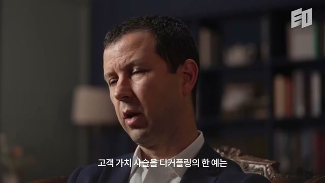
첫 사례는 ride-sharing, 특히 Uber다. Uber 이전에 공항으로 가기 위해 택시가 필요하면 길거리로 나가 택시를 잡거나 배차 담당자에게 전화해야 했다. 하지만 승객이 있는 거리에는 택시가 없고, 몇 블록 떨어진 곳에는 빈 택시가 줄지어 있을 수 있었다. 자원의 총량이 부족한 것이 아니라, 수요자와 공급자가 서로를 찾는 활동이 비효율적이었다.
Uber는 시장에 운전자와 자동차가 충분히 있다는 점을 보았다. 문제는 승객이 어디서 차를 얻을지 모르고, 운전자는 어디서 승객을 얻을지 모른다는 것이었다. 그래서 Uber는 고객 가치 사슬에서 “차량 서비스를 이용해 목적지로 이동하기 위해 고객이 해야 하는 활동들”을 살펴보았다. 그중 매칭이라는 약한 고리를 디지털 방식으로 훨씬 잘 해결했다.
고객 가치 사슬은 고객이 상품이나 서비스를 획득하고, 사용하고, 폐기하기 위해 해야 하는 모든 활동의 연속이다. 화면에는 “제품이나 서비스가 고객에게 전달되기까지의 모든 과정”과 “고객이 제품과 서비스를 획득 및 사용, 폐기하기 위해 해야 하는 일련의 활동”이라는 설명이 크게 제시된다. 이 정의는 영상 전체의 기반이다. 기업이나 제품 중심으로 보지 않고, 고객이 실제로 어떤 순서를 밟는지를 보는 것이다.
예컨대 당좌예금 계좌를 개설하려면 고객은 먼저 여러 은행 옵션을 찾아본다. 그다음 은행 지점에 가고, 계좌 개설을 신청하고, 서류를 제출한다. 은행은 수표책과 기타 자료를 제공하고, 고객은 계좌번호를 받아 계좌를 사용하게 된다. 이 모든 단계가 고객 가치 사슬이다.
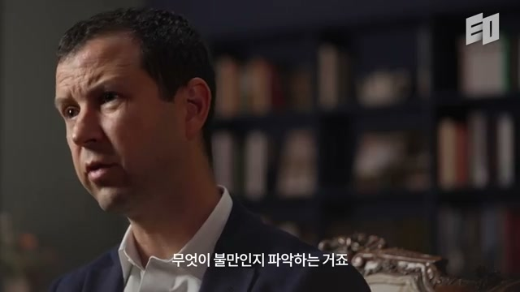
창업자가 고객 가치 사슬을 그린 다음 해야 할 일은 “약한 고리”를 찾는 것이다. 약한 고리는 고객이 기존 기업과 거래하면서 반드시 해야 하지만, 매우 불만족스럽게 느끼는 활동이다. 이 활동은 스타트업에게 기회가 된다. Teixeira는 그 활동을 “훔치는” 과정이 바로 디커플링이라고 말한다.
디커플링은 기존 기업이 역사적으로 함께 제공하던 고객 가치 사슬의 연결을 끊는 것이다. 대개 디지털 플레이어가 특정 활동 하나를 떼어내어 더 집중적으로, 더 나은 방식으로 제공한다. Uber는 택시 산업에서 승객과 운전자가 어디서 만날지, 그리고 승객이 차가 온다는 안심을 얻는 활동을 훔쳤다. 이후 고객을 확보하고 성장하면서 더 많은 활동으로 확장했다.
고객 가치 사슬의 활동은 세 가지뿐이다. 첫째는 고객에게 실질적 효용을 주는 가치 창출 활동이다. 둘째는 기업이 대가를 받거나 고객이 비용을 지불하는 가치 포착 활동이다. 셋째는 고객이 싫어하지만 결과를 얻기 위해 어쩔 수 없이 수행하는 가치 침식 활동이다. 따라서 디커플링의 유형도 이 세 가지 활동을 각각 분리하는 방식으로 나뉜다.
Twitch는 가치 창출 활동의 디커플링이다. 게임을 직접 플레이하는 것뿐 아니라, 잘하거나 재미있는 사람이 게임하는 것을 보는 것도 독립적인 가치가 된다는 점을 발견했다. 사용자는 게임 목록에서 콘텐츠를 고르고, 채팅방에서 시청하며, 플레이어와 다른 이용자들과 상호작용한다. 하지만 직접 플레이하지 않는다. 이처럼 Twitch는 플레이와 시청을 분리했다.
Steam은 가치 침식 활동 제거에 가깝다. 과거에는 게임을 사거나 빌리기 위해 매장에 가야 했고, 매체를 고른 뒤 다시 집에 와야 했다. 고객 대부분은 이 과정을 좋아하지 않았다. Steam은 온라인 접근을 통해 이동과 물리 매체 확보라는 불편을 줄였다.
Fortnite와 모바일 게임의 프리미엄 모델은 가치 포착 활동의 디커플링이다. 기존에는 게임을 하려면 먼저 구매해야 했지만, 프리미엄 모델에서는 먼저 무료로 플레이하고 나중에 결제한다. 돈을 내는 활동과 플레이 활동이 분리된다. 사용자는 충분히 경험한 뒤 게임 구매나 가상 아이템 결제를 선택한다.
Teixeira는 다양한 산업과 국가를 조사하면서 디커플링 스타트업의 가치평가를 살폈다. 그 결과 투자자와 벤처캐피털은 가치 창출 활동을 디커플링하는 스타트업을 다른 유형보다 더 높게 평가하는 경향이 있었다. 이는 가치 침식 제거나 가치 포착 분리 기업이 성장할 수 없다는 뜻은 아니다. 다만 고객에게 새로운 효용을 직접 제공하는 활동을 분리한 기업이 투자자에게 더 매력적으로 보인다는 뜻이다.
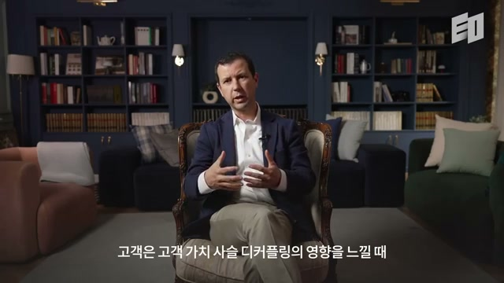
고객 관점에서도 디커플링의 영향은 강하다. 고객이 어떤 스타트업이 고객 가치 사슬의 한 활동을 기존 기업보다 훨씬 집중적으로 잘 제공한다고 느끼면 빠르게 이동한다. Uber나 핀테크 기업처럼 소비자에게 디지털 솔루션을 제공하는 사업은 기존 경험에 불만족하던 고객을 빠르게 끌어들인다. 이후 이들은 새로운 확장 기회를 찾기 시작한다.
커플링은 스타트업이 디커플링으로 시장에 진입한 뒤 고객 가치 사슬의 추가 활동을 덧붙이는 과정이다. 화면에는 “고객 활동 사이에 새로운 활동을 추가”라는 문구가 제시된다. Uber는 처음에는 승차 서비스를 제공했다. 그 뒤 음식 배달, 패키지 배달로 확장했다.
이 과정은 고객 가치 사슬의 인접 활동으로 바깥쪽으로 성장하는 방식이다. 처음부터 모든 것을 하려 하지 않고, 고객이 가장 불만족하는 한 활동을 해결해 시장에 들어간다. 그런 다음 확보한 고객, 데이터, 운영 역량을 바탕으로 주변 활동을 추가한다. 디커플링은 진입 전략이고, 커플링은 확장 전략에 가깝다.
MBA 학생들이 빠르게 이해하는 중요한 통찰은, 어떤 산업을 파괴하거나 고객 활동을 디커플링한다고 해서 반드시 돈을 버는 것은 아니라는 점이다. 고객에게 가치를 제공하는 것과 그 가치 일부를 기업이 비용 이상으로 포착하는 것은 별개의 문제다. 수익성 있는 공식이나 비즈니스 모델을 미리 완벽하게 예측하기 어려운 경우도 많다.
그래서 창업자는 사업을 만들고, 확장하고, 경제성을 배우고, 장기적으로 돈을 벌 수 있는지 판단해야 한다. 때로는 시도해야 하고, 강한 신념이 필요하며, 필요하면 피벗해야 한다. “고객에게 가치를 주면 반드시 수익을 얻는다”는 근본 법칙은 없다. 이 지점에서 디커플링은 만능 해답이 아니라, 고객을 획득하기 좋은 시장 진입 프레임워크로 이해해야 한다.
PillPack 사례는 디커플링 실행 단계를 보여준다. 보스턴 근처의 이 스타트업은 하루에 여러 알의 약을 사서 복용해야 하는 고객에게 약 복용 과정이 매우 복잡하다는 점을 발견했다. 고객 가치 사슬은 의사 진료, 검사, 처방 수령, 약국 방문, 약값 지불, 복용 계획 작성, 실제 복용, 건강 문제 해결로 이어진다. 화면에는 체인 형태의 도식으로 “진료 보기, 검사 받기, 처방 받기, 약국 가기”가 표시된다.
2단계는 각 활동을 분류하는 것이다. 약을 복용해 건강해지는 활동은 가치 창출이다. 진료 보러 가기, 처방 받기, 약국 가기, 약을 조제하고 복용 시간을 기억하는 것은 대부분 가치 침식이다. 병원비와 약값을 내는 것은 가치 포착이다.
3단계는 약한 고리를 찾는 것이다. PillPack은 특히 고령층이 하루에 여러 약을 복용할 때, 어떤 약을 언제 먹어야 하고 어떤 약은 함께 먹으면 안 되는지 조직화하고 기억하는 활동이 큰 부담이라는 점을 발견했다. 고객은 건강이라는 가치를 얻기 위해 이 활동을 해야 하지만, 그 자체를 좋아하지 않는다. 바로 여기가 스타트업의 기회였다.
4단계는 고객 가치 사슬을 실제로 끊고 그 활동을 훔치는 것이다. PillPack은 고객이 직접 복용 일정을 정리하고 약을 분류하지 않아도 되도록 서비스를 설계했다. 고객 또는 의사가 처방전을 스타트업에 보내면, PillPack은 약을 구매하고 작은 비닐 봉투 형태로 포장했다. 이 봉투들은 롤 형태로 연결되어 있어 매일 꺼내 복용하고 버리면 다음 봉투가 나온다.
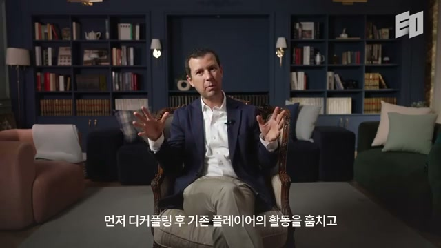
5단계는 기존 기업의 반응을 예측하고 선제적으로 대비하는 것이다. 디커플링은 기존 플레이어의 활동을 훔치는 일이므로, 제약사나 약국 같은 incumbents가 대응할 수 있다. Teixeira는 자신의 책에서 기존 기업들의 반응이 대체로 예측 가능하다고 설명한다. 중요한 것은 누가 실제로 따라 할 동기와 능력이 있는지를 보는 것이다.
약국도 PillPack을 모방해 처방약을 집으로 보내고, 복용 단위로 포장할 수 있었다. 하지만 약국에는 강한 동기가 없었다. 기존 약국의 모델은 고객을 매장 안으로 들여 약을 사게 하고, 동시에 다른 여러 상품도 사게 만드는 구조다. 처방약을 집으로 보내면 매장 방문이 줄어들고, 이는 기존 수익 구조를 약화시킨다.
이 점이 PillPack의 성장 여지를 만들었다. 기존 약국이 강하게 모방하지 못하는 동안 PillPack은 더 빠르게 성장할 수 있었다. 결국 Amazon은 PillPack을 10억 달러 이상에 인수했다. 이 사례는 약한 고리뿐 아니라 기존 기업의 대응 제약까지 함께 봐야 한다는 점을 보여준다.
디커플링을 통해 시장을 파괴하고 스타트업을 만들 때 가장 중요한 단계는 고객 가치 사슬의 가장 약한 고리를 찾는 것이다. 그 약한 고리는 고객이 구매 과정에서 가장 불만족하는 순간이다. 바로 그 순간이 대기업 고객을 가장 쉽게 빼앗을 수 있는 기회다. 고객은 전체 서비스를 바꾸고 싶어서가 아니라, 특정 불편 하나를 해결하고 싶어서 이동한다.
보험 산업이 좋은 예다. 생명보험, 건강보험, 자동차보험 모두 고객이 열정적으로 구매하거나 재구매하거나 변경하고 싶어 하는 상품이 아니다. 보험을 취득하는 과정은 복잡하다. 그중에서도 여러 회사의 보험 상품을 비교하는 과정은 특히 나쁜 경험이다.
전 세계 많은 기업가가 보험 비교의 불편함을 발견했다. 이들은 InsureTech라는 파괴의 흐름을 만들었다. InsureTech 기업들은 고객이 여러 보험사의 상품을 비교하고, 선택하고, 가입하는 과정을 쉽게 만들려 한다. 다시 말해 특정 산업의 고객 가치 사슬에서 가장 약한 고리를 찾아 그 주변에 사업을 만든 것이다.
새로운 기회는 고객 행동이 변할 때 생긴다. 고객의 필요와 욕구가 바뀌거나, 아직 충족되지 않은 필요와 욕구가 있을 때 디커플링 기회가 열린다. 화면에는 매장 안에서 고객과 상담자가 태블릿을 보며 논의하는 장면이 나온다. 이는 고객의 선택과 비교 과정이 디지털 도구와 결합될 때 새로운 서비스 경험으로 바뀔 수 있음을 시각적으로 보여준다.
고객은 대체로 세 가지 이유로 불만을 느낀다. 첫째, 어떤 활동을 수행하는 데 돈이 많이 든다고 느낀다. 보험 업계에서 대리인을 직접 만나기 위해 차나 대중교통을 타고 이동해야 한다면, 고객은 이 과정이 비싸다고 느낄 수 있다. 온라인으로 할 수 없을까라는 질문이 자연스럽게 나온다.
둘째, 시간이 오래 걸리면 불만이 생긴다. 신용카드를 예로 들면, 서류 제출에 이틀이 걸리고 승인 후 카드 수령에 다시 2~3일이 걸린다면 고객은 불편함을 느낀다. 셋째, 노력이 많이 들면 불만이 생긴다. 게임이나 영화를 위해 DVD를 가지러 나가는 대신 스트리밍을 원하는 이유는 스트리밍이 거의 노력 없이 가능하기 때문이다.
돈, 시간, 노력의 비용이 증가하는 시장에서는 디커플링 기회가 커진다. 고객이 어떤 활동을 수행하기 위해 너무 많은 비용을 내고 있다고 느끼는 순간, 스타트업은 그 활동을 더 싸게, 더 빠르게, 더 쉽게 만들 여지를 찾을 수 있다. 이 기준은 산업을 막론하고 적용된다. 제품 아이디어보다 먼저 고객의 비용 구조를 보라는 메시지다.
AI, 특히 생성형 AI는 매우 유행하고 있고 빠르게 성장하고 있다. 기존 기업도 AI와 생성형 AI의 사용 사례를 찾고 있으며, 스타트업 창업자들도 이 도구를 어떻게 활용할지 고민하고 있다. Teixeira는 AI가 컴퓨터나 인터넷처럼 범용 도구라고 강조한다. 그래서 다양한 상황과 유스케이스에 적용될 수 있다.
문제는 AI를 어디에 적용할지 모르면 고객에게 거의 가치를 만들지 못하는 활동에 적용할 수 있다는 점이다. 따라서 중요한 것은 AI 자체가 아니라, 고객 가치 사슬 속에서 고객이 불만을 느끼는 활동을 찾는 일이다. AI는 그 활동을 더 싸게, 더 빠르게, 더 쉽게 만드는 도구일 때 의미가 있다.
사업에 AI를 적용하려는 창업자나 기존 기업은 고객이 특정 활동에서 과도한 돈, 시간, 노력을 지불하고 있는지 확인해야 한다. 고객이 “이 정도 비용을 낼 필요가 없다”고 느끼는 지점을 찾아야 한다. 그리고 AI가 실제로 그 비용을 줄여줄 수 있어야 한다. AI 도입의 기준은 기술의 신기함이 아니라 고객 활동 비용의 감소다.
Teixeira는 디커플링을 처음 배웠다면 개념을 내면화한 뒤, 자신이 잘 아는 산업에 적용해보라고 조언한다. 완전히 새로운 것을 만들기 전에, 이미 알고 있는 비즈니스 모델을 디커플링과 고객 가치 사슬 해체 도구로 다시 재현해보는 것이 좋다. 잘 모르는 산업에서 곧바로 새로운 모델을 찾으려 하기보다, 익숙한 산업에서 프레임워크의 작동 방식을 연습하라는 뜻이다. 이는 창업 아이디어 발굴보다 사고방식 훈련을 먼저 하라는 실용적 조언이다.
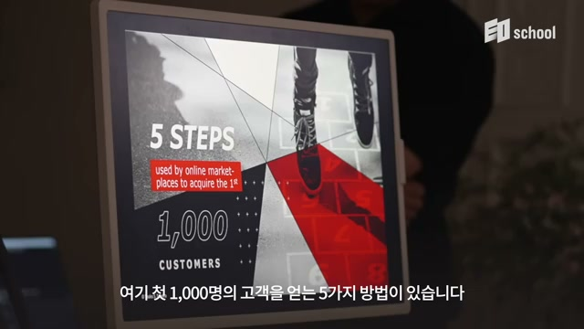
마지막으로 디커플링은 “beachhead strategy”, 즉 시장에 진입하고 침투하기 위한 초기 거점 전략으로 설명된다. 우리는 성공한 스타트업들이 처음부터 압도적으로 뛰어나고 파괴적이었다고 생각하기 쉽다. 하지만 실제로 초기에는 단지 조금 더 나았을 뿐이다. 중요한 것은 거기서 멈추지 않고 계속 개선했다는 점이다.
마지막 화면에는 “5 STEPS used by online marketplaces to acquire the 1st 1,000 customers”라는 그래픽이 보인다. 이는 온라인 마켓플레이스가 첫 1,000명의 고객을 확보하는 다섯 단계에 관한 다음 주제를 예고한다. EO school 로고도 함께 표시되어, 본 영상이 창업과 시장 진입 전략을 다루는 교육형 콘텐츠의 일부임을 보여준다.
“디지털 파괴 또는 고성장 스타트업을 만드는 과정은 설계될 수 있다.”
“고객 가치 사슬은 고객이 제품과 서비스를 획득하고, 사용하고, 폐기하기 위해 해야 하는 일련의 활동이다.”
“약한 고리는 고객이 해야 하지만 현재 방식에 만족하지 못하는 활동이다.”
“디커플링은 기존 기업이 함께 제공하던 고객 가치 사슬의 연결을 끊는 것이다.”
“Uber의 문제 인식은 차와 운전자가 부족하다는 것이 아니라, 승객과 운전자가 서로를 찾지 못한다는 것이었다.”
“고객 가치 사슬에는 가치 창출, 가치 포착, 가치 침식 활동만 존재한다.”
“Twitch는 게임을 직접 하는 활동과 남이 게임하는 것을 보는 활동을 분리했다.”
“프리미엄 모델은 게임을 플레이하는 활동과 돈을 지불하는 활동을 분리한다.”
“산업을 파괴할 수 있다는 사실은 재무적으로 보상받는다는 보장이 아니다.”
“고객에게 가치를 제공하면 반드시 수익을 포착할 수 있다는 근본 법칙은 없다.”
“PillPack의 기회는 여러 약을 언제 어떻게 먹어야 하는지 정리하고 기억하는 불편에서 나왔다.”
“AI는 범용 도구이므로, 고객이 불만을 느끼는 활동을 더 싸게, 빠르게, 쉽게 만들 때 의미가 있다.”
이 영상의 핵심은 “혁신은 제품 아이디어에서 시작하는 것이 아니라 고객 활동의 사슬을 해부하는 데서 시작한다”는 것이다. 성공적인 디지털 스타트업은 기존 기업이 묶어서 제공하던 활동 중 고객이 가장 싫어하는 하나를 찾아내고, 그것을 더 잘 수행함으로써 시장에 진입한다. Uber는 매칭과 안심을, Twitch는 시청 경험을, Steam은 물리적 이동의 불편 제거를, Fortnite는 선결제 구조의 분리를, PillPack은 약 복용 관리의 복잡성 제거를 디커플링했다.
실무적으로는 다섯 단계를 적용할 수 있다. 먼저 고객 가치 사슬을 최대한 구체적으로 그린다. 그다음 각 활동을 가치 창출, 가치 포착, 가치 침식으로 분류한다. 이후 고객이 돈, 시간, 노력 측면에서 가장 큰 불만을 느끼는 약한 고리를 찾는다. 그 활동을 독립적으로 제공할 수 있는 방식으로 끊어내고, 마지막으로 기존 기업이 어떻게 반응할지 예측한다.
AI 시대에도 이 프레임워크는 그대로 유효하다. 생성형 AI를 쓰는 것 자체는 전략이 아니다. 고객 가치 사슬 안에서 고객이 불필요하게 많은 돈, 시간, 노력을 쓰는 활동을 찾아내고, AI가 그 비용을 실질적으로 낮출 때 전략이 된다. 따라서 AI 창업이나 기존 기업의 AI 전환은 “무엇을 자동화할까”가 아니라 “어떤 고객 활동의 약한 고리를 더 싸고 빠르고 쉽게 만들까”에서 출발해야 한다.
가장 중요한 시사점은 디커플링이 완성된 사업 모델이 아니라 시장 진입 전략이라는 점이다. 초기 스타트업은 처음부터 거대한 플랫폼이 될 필요가 없다. 고객이 가장 불만족하는 한 지점에서 기존 기업보다 조금 더 나은 경험을 만들고, 그 경험으로 고객을 확보한 뒤, 인접 활동으로 커플링하며 확장한다. 성공한 스타트업들도 처음에는 압도적이지 않았고, 단지 약한 고리 하나에서 더 나았으며, 이후 멈추지 않고 개선했다는 것이 영상의 마지막 메시지다.
댓글
GitHub 이슈 기반 댓글 시스템입니다.